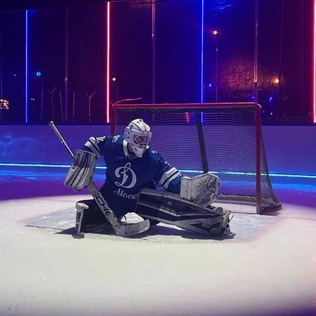
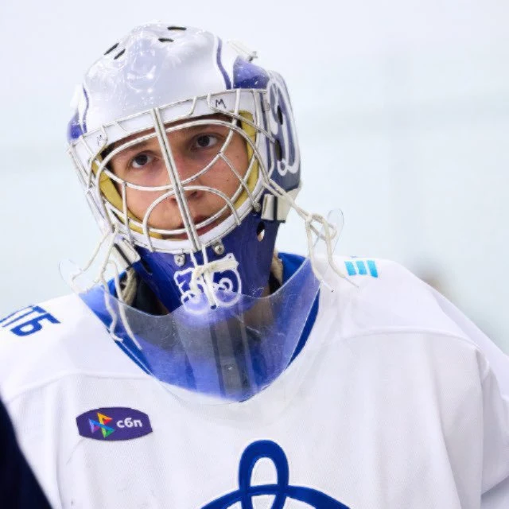
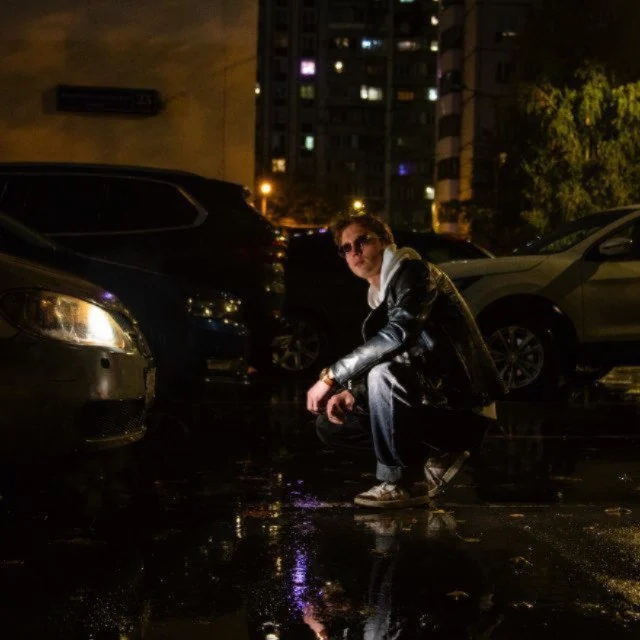

Привет, я Михаил
Спортивный и коммуникационный дизайнер из Москвы
Делаю форму, мерч, календари и всё, что болельщики уносят с трибуны домой. Я один из «Улиток Кокарева» и отвечаю за всю визуальную часть канала. Сам стою в воротах за «Улиток» под 35-м номером, так что хоккей знаю не по телевизору.
- СейчасСоциология маркетинга, РГГУ
- ОпытМаркетинг и реклама, АО «Красная Звезда», 2024–2026
- Дополнительное образованиеМосковская школа программистов, 2020–2023
- ФорматМосква: офис, удалёнка или гибрид
- ИнструментыFigma, Illustrator, Photoshop, HTML/CSS, Python, нейросети
Открыт к работе
Программировать начал в 2019 году, сначала ушёл во фронтенд. Потом понял, что мне интереснее, как вещи выглядят, чем как они устроены внутри, и переключился на бренд-дизайн и маркетинг. Код при этом остался со мной: Telegram-боты, веб-приложения и этот сайт.
С «Улитками Кокарева» всё началось с благотворительного матча 25 августа 2025 года для фонда «Чудо света». Я помогал всем, чем мог: сделал первые посты, карточки для автографов легенд «Динамо» Карцева и Харитонова и Романа Ротенберга, а ещё свою первую хоккейную форму, в которой мы и играли. С того матча всё и завертелось, и теперь вся визуальная часть канала на мне.
Полтора года работал в отделе маркетинга и рекламы АО «Красная Звезда»: витрина на Яндекс Маркете, макеты на печать, выставки, редизайн сайта. Сейчас учусь на социологии маркетинга в РГГУ.
В воротах стою под 35-м номером, взял его в честь Хантера Миски. Однажды мы с друзьями решили, что просто играть уже скучно, и я собрал «Операторскую»: табло, сирену и протокол голов для наших матчей.
Вне дизайна: езжу на Nissan Almera 2004 года и мечтаю об Alfa Romeo 159 и Porsche Cayenne. Болею за «Динамо», играю в футбол и видеоигры, слушаю самую разную музыку.
Открыт к работе в клубе, спортивном медиа, к проектам на заказ и к созданию мерча. Если нужен дизайнер, который знает хоккей изнутри, напишите мне в Telegram.



Навыки
Что я умею и где это видно. Каждая строчка ведёт в проект, где навык работал на деле.
-
Форма и мерч
Хоккейная форма, шарфы, коллекционные карточки, брелоки. Довожу от идеи до вещи, которую надевают и покупают.
-
Матчдей и айдентика
Цельный образ матча: патч на форму игроков, экраны арены, открытки и соцсети в одном стиле.
-
SMM и рубрики
Визуальная часть Telegram-канала «Улитки Кокарева»: рубрики, афиши, превью матчей, поздравления, сториз.
-
Полиграфия и упаковка
Макеты на печать, календари, упаковка и открытки, которые доходят до болельщика в руки.
-
Шрифты и паттерны
Рисую свои шрифты и паттерны под проект: от рукописного шрифта для матча до росписи гжель на свитере.
-
Код
HTML/CSS и Python: Telegram-боты, веб-приложения вроде «Операторской» для наших матчей и этот сайт.
Telegram-боты«Операторская»Этот сайт
- Figma
- Illustrator
- Photoshop
- HTML/CSS
- Python
- Нейросети
Альбом
Шесть главных наклеек сезона. Каждая открывается отдельной страницей с историей проекта.
День борьбы с лейкозом
Матчдей вместе с «Динамо»: патч «Лекарство внутри тебя» на форме игроков, медиапанели арены, соцсети и свой шрифт.
Смотреть проектОдин день карьеры
Лимитка карточек с воспоминаниями игроков «Динамо» и брелоком «Улиток».
Sold outза 6 часов Смотреть проектФорма «Гжель»
Концепт альтернативной формы ХК «Динамо Москва»: роспись по фарфору на домашнем и гостевом комплектах.
Смотреть проектПлатёжка2.0
Рубрика канала «Улиток» про трансферы и зарплатную ведомость «Динамо» в виде старого альбома с марками.
Смотреть проектКалендарь «Динамо» 2026
Настольный календарь с упаковкой. Весь тираж — 100 штук — распродан за неделю.
Смотреть проект«Улитки Кокарева»: форма и шарфы
Домашний и гостевой комплекты и шарфы как одна линейка мерча нашей команды.
Смотреть проектЛента
Всё подряд: афиши, превью, поздравления, розыгрыши и немного безумия.